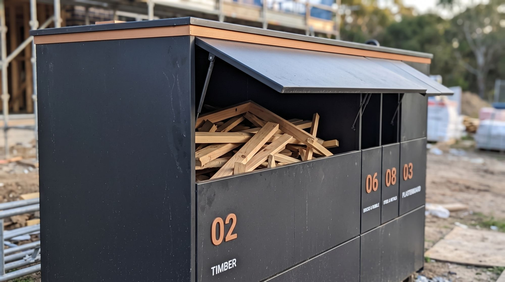
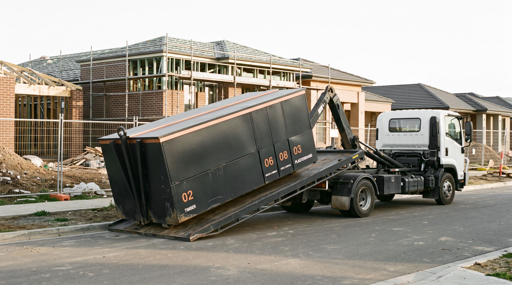
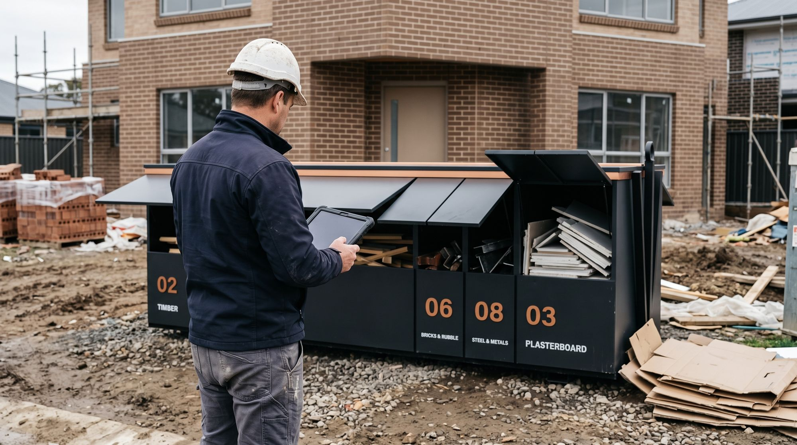

Think BIG. Recycle better.
One recycling station on every new home site. Eight streams in one footprint, each bay sized to what a house build actually throws out.
of Australia's waste comes from construction and demolition.
Your Home, Australian Governmenta tonne. Victoria's metro landfill levy from 1 July 2026, on top of the gate fee.
EPA VictoriaThe national target for average resource recovery from all waste streams by 2030.
National Waste Policy Action PlanThe problem with one big skip
A mixed skip is a sorting job you pay someone else to do. Or nobody does.
- It all gets mixedPlasterboard, timber, cardboard and brick go in together. Once it's mixed, every tonne is harder and dearer to recover.
- It gets wetAn open skip in the rain ruins plasterboard and cardboard for recycling. Polystyrene and wrap blow down the street.
- The levy lands on youWhatever ends up in landfill carries the state levy, and the levy rises every year.
- Separate skips don't fitYour Home recommends separate, labelled recycling skips. A narrow estate block rarely has room for more than one.

Bins fill by space, not weight.
Bricks & concrete
30%of the weight
5%of the space
Cardboard
4%of the weight
17%of the space
Size bins by weight and the rubble bay sits mostly empty while cardboard overflows. Every BIG bay is sized by the space its material takes up, so all eight fill at about the same rate.
Everything in the BIG system.
The station, the numbers behind it, what it saves, the standard trades sign up to, the government guidance it delivers, and how to try it on your own homes.

The stationEight numbered bays under one weatherproof lid. Spin it in 3D and open every bay. How it's sizedThe data, the conversion and every assumption behind each bay.
How it's sizedThe data, the conversion and every assumption behind each bay.

SavingsLevy, tonnes and truck visits across your build program. The BIG StandardA ready-made subcontract clause, stage checks and a trade sheet.
The BIG StandardA ready-made subcontract clause, stage checks and a trade sheet.
 Your HomeThe Australian Government's advice, delivered on site.
Your HomeThe Australian Government's advice, delivered on site.

PilotTry BIG on real homes next to your current skips.For homebuyers
Buyers are told to drive past and look.
The Australian Government's Your Home guide tells people choosing a builder to inspect homes under construction and check for sustainable practices, including waste separation. A BIG station out the front shows it from the street, before anyone signs.
Drive by homes under construction to see how well maintained the site is.
One home. One station.
The station arrives at slab and leaves at handover. Every lot on the estate runs the same system, so every trade learns it once.
Illustrative image
Run BIG on your next homes.
No long contract. We run it next to your current skips, weigh every bay, and show you the difference.